고대 · 아테네의 광장
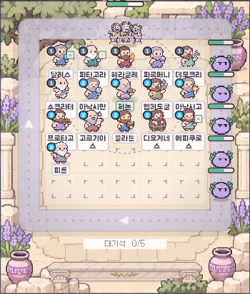
탈레스 · 만물의 근원은 물이다!
실제 전투 렌더 코드 · 로컬 테스트 데이터중세 · 신앙의 성채
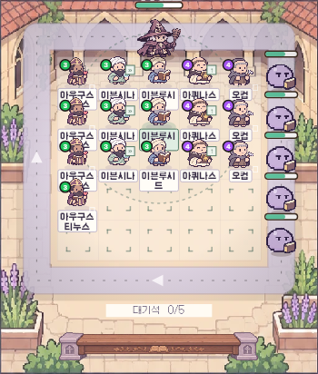
아우구스티누스 · 주여, 저에게 순결을 주소서… 아직 말고요!
실제 전투 렌더 코드 · 로컬 테스트 데이터동양 · 백가의 숲
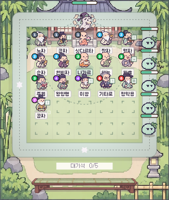
노자 · 도를 도라 하면 도가 아니다!
실제 전투 렌더 코드 · 로컬 테스트 데이터근대 · 계몽의 도시
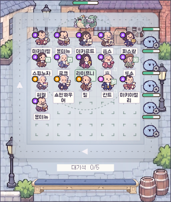
니콜로 마키아벨리 · 사랑받기보다 두려움의 대상이 되는 편이 안전하다.
실제 전투 렌더 코드 · 로컬 테스트 데이터현대 · 언어의 미궁
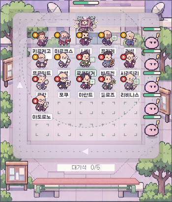
쇠렌 키르케고르 · 절망은 죽음에 이르는 병이다!
실제 전투 렌더 코드 · 로컬 테스트 데이터동굴의 그림자 군주
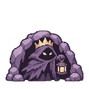
레이드·웨이브 보스 전용 이미지아테네 배심원단
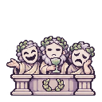
레이드·웨이브 보스 전용 이미지면죄부 대상인
레이드·웨이브 보스 전용 이미지마녀사냥꾼
레이드·웨이브 보스 전용 이미지형식주의 대감
레이드·웨이브 보스 전용 이미지과거시험 암기귀신
레이드·웨이브 보스 전용 이미지절대왕정 집행관
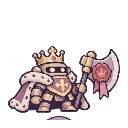
레이드·웨이브 보스 전용 이미지리바이어던
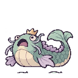
레이드·웨이브 보스 전용 이미지허무의 사도
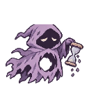
레이드·웨이브 보스 전용 이미지알고리즘 확증편향 괴물
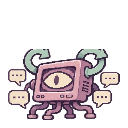
레이드·웨이브 보스 전용 이미지